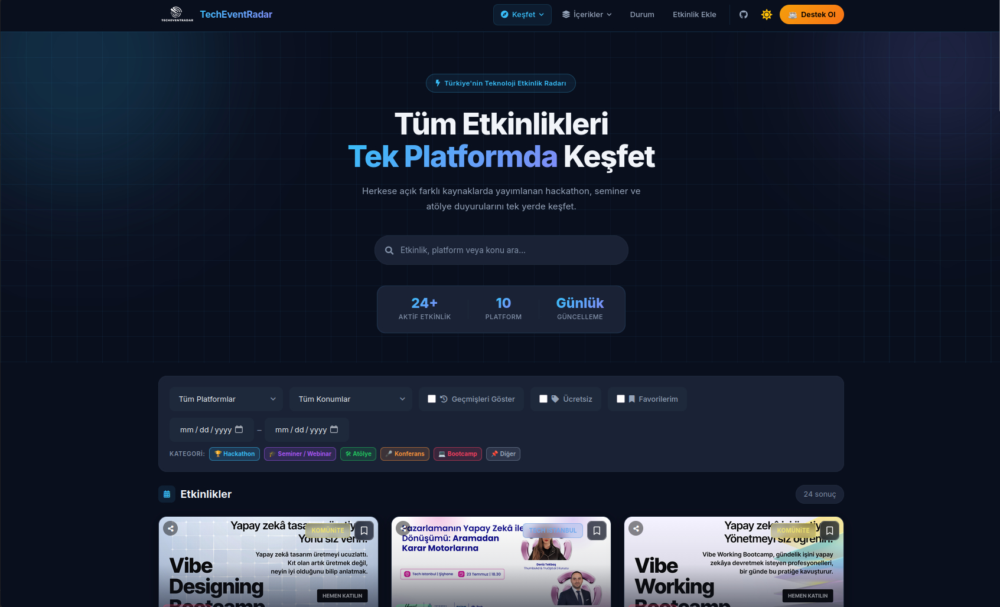

eventradar.dev
TechEventRadar: Türkiye'deki bootcamp, hackathon, webinar ve kariyer etkinliklerini 10 farklı kaynaktan günlük olarak toplayan, filtreleme/kategori etiketleme, takvim (.ics) ve RSS desteği sunan, e-posta/push/Telegram üzerinden bildirim gönderen açık kaynak bir platform. FastAPI + SQLAlchemy backend'i, React (Vite) frontend'i ve Selenium tabanlı scraper modülleriyle Docker Compose üzerinde çalışır.